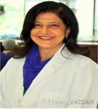

Dr. Anjana Satyajit
QUALIFICATIONS
Senior Consultant , BDS, 23 years of experience
ABOUT DOCTOR
Dr. Anjana is a dedicated dentist with an experience of 23 years.
She has a team of specialists that include Endodontists, Orthodontist, Periodontist, Pedodontist, Prosthdontist, Oral Surgeon and Implantologist who work meticulously to offer the best treatments.
She has published several papers both nationally and internationally and is a member of many medical associations.
She completed her BDS from Maulana Azad Medical College, Delhi and further studied from Bellevue Hospital Centre, NYU.
SPECIALIZATION :
Cosmetic & Aesthetic Dentistry,
Smile Design,
Dental Checkup (General),
Dental Examinations,
Crowns and Bridges Fixing,
Scaling / Polishing,
Surgical Tooth Extraction,
Dental Ceramics,
Dental Services,
Straightening Teeth (Conventional Braces),
Full Denture (Acrylic),
Cosmetic Gum Treatment,
Teeth Whitening (Take-Home Kit),
Teeth Scaling & Polishing,
Crowns & Bridges Fixing.
WORK EXPERIENCE
HOD, Axiss Dental, 1999